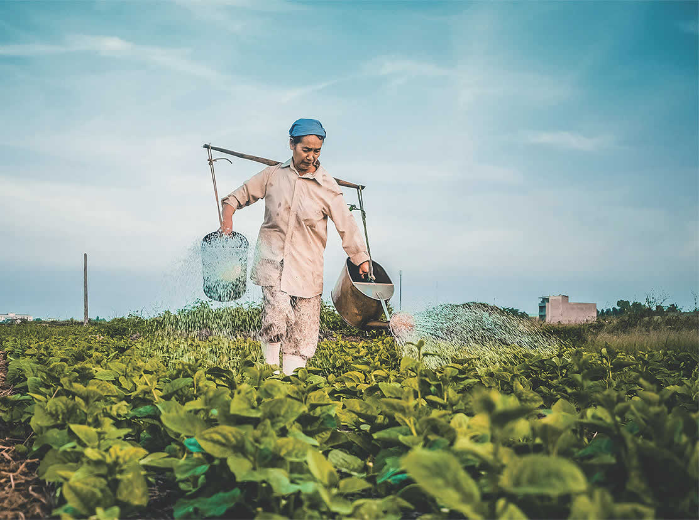
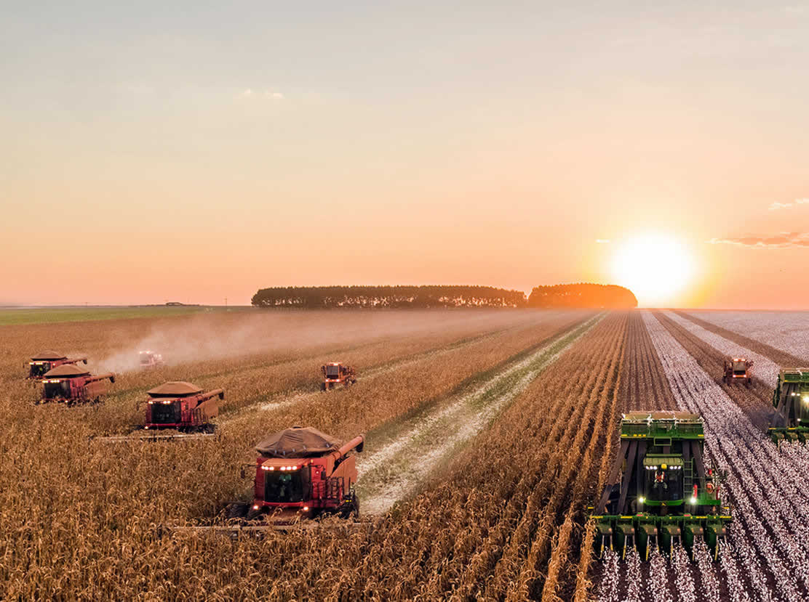
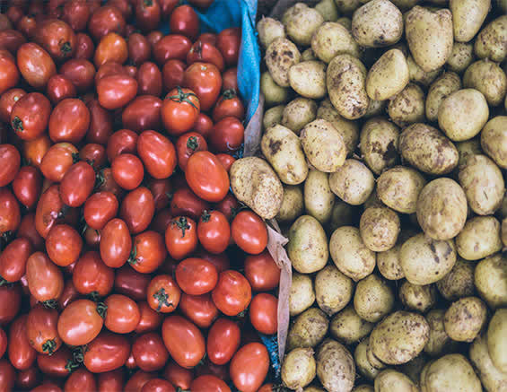
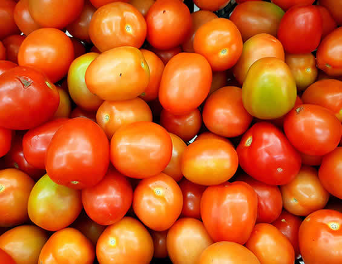
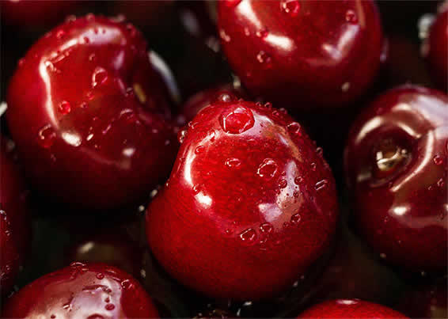
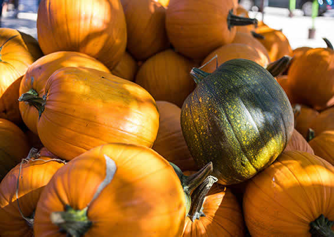

Good food crops play a vital role in ensuring food security and nutrition for millions of people worldwide. They provide essential vitamins, minerals, and energy that support a healthy lifestyle. Choosing nutrient-rich crops like rice, wheat, pulses, and vegetables helps in reducing malnutrition and improving overall well-being. By promoting the cultivation of high-quality food crops, we can create a healthier and more sustainable future.
Read MoreSustainable agriculture is the key to preserving natural resources while producing high-yield food crops. Practices like crop rotation, organic farming, and minimal pesticide use help maintain soil fertility and reduce environmental impact. Farmers can also adopt water conservation techniques like drip irrigation to ensure efficient water use. By embracing sustainable methods, we can grow food responsibly and protect the planet for future generations.
Read More




Pulses and millets are among the most nutritious crops, offering high protein, fiber, and essential minerals. These crops are an excellent alternative to meat-based proteins and are widely consumed in vegetarian and vegan diets. Millets, such as pearl millet and foxtail millet, are also drought-resistant and can thrive in arid regions. Encouraging the consumption of these superfoods can contribute to a balanced diet and improved health.
Read MoreWith climate change affecting global food production, it is crucial to focus on growing resilient crops that can withstand extreme weather conditions. Crops like maize, sorghum, and certain varieties of rice and wheat are bred to be more resistant to drought, pests, and diseases. Investing in climate-smart agriculture ensures that farmers can continue producing food despite environmental challenges, ensuring a steady supply of essential crops.